Willkommen an der Kulturnacht Küsnacht
Freitag, den 29. September 2017, ab 18 Uhr im Dorfzentrum
Das gab es noch nie! Küsnachter Kulturschaffende und kulturtragende Institutionen bieten zum ersten Mal gemeinsam ein spartenübergreifendes Program aus der kulturellen Vielfalt Küsnachts an.
Die Kulturnacht Küsnacht 2017 ist ein Projekt der Kulturellen Vereinigung Küsnacht (KVK).
Dieser Anlass ist dank des unentgeltlichen Engagements vieler Beteiligter möglich. Der Eintritt ist frei.
Am Freitag, den 29. September 2017 verwandelt sich Küsnachts Dorfzentrum in eine grosse Bühne. Ab 18 Uhr finden zu jeder vollen Stunde an verschiedenen Orten halbstündige Veranstaltungen statt: Film, historische und kunsthistorische Führungen, Konzerte, Kunstaustellungen, Lesungen, Literatur, Poetry Slam, Gedichte, Sprache, Theater und Kulinarik.
Das genaue Programmheft erscheint im August 2017. Stellen Sie Ihr eigenes Programm zusammen und lassen Sie sich verzaubern.
Die Veranstaltungsorte im Dorfzentrum

Zeitplan
Kontakt KVK und Info Anfahrt
Die Kulturnacht Küsnacht ist eine Initiative der Kulturellen Vereinigung Küsnacht - KVK
Die KVK gewährleistet zusammen mit der Gemeinde den Betrieb des Ortsmuseums Küsnacht, betreut die Galerie im Hochhuus und veranstalted Vorträge und Exkursionen mit
kulturgeschichtlichem Hintergrund.
Werden Sie Mitglied der KVK und unterstützen Sie unsere Aktivitäten.
Die Kulturnacht Küsnacht 2017 wird von einem Nonprofit-Team organisiert:
- Martine Peyer, Kulturelle Vereinigung Küsnacht
- Ilka Allenspach, Kulturelle Vereinigung Küsnacht
- Elisabeth Abgottspon, Ortsmuseum Küsnacht
- Hans-Peter Fehr, Theaterverein Die Kulisse Küsnacht
Interessenten können sich per E-Mail anmelden: vorstand@kulturelle-vereinigung-kuesnacht.ch
Anfahrt mit Bahn, Bus oder Auto
- Bahn: S6 oder S16 in Richtung Uetikon bzw. Meilen bis «Küsnacht ZH»
- Bus 916 ab Zürich-Bellevue bis Haltestelle «Oberwacht» oder «obere Heslistrasse».
- Mit dem Auto auf der Seestrasse: Abzweigen in Küsnacht bei der Ampel, durch die Unterführung bis zum Parkplatz beim Bahnhof.
Herzlichen Dank unseren Sponsoren und Gönnern für die finanzielle Unterstützung!
Goldsponsoren


Silbersponsoren

 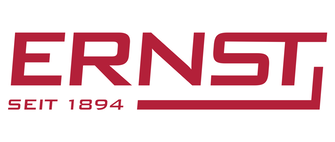
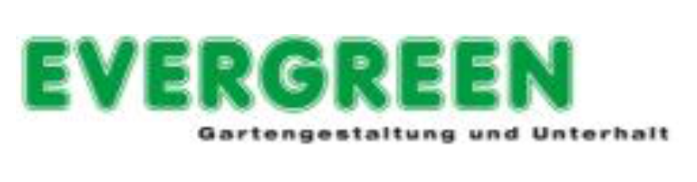
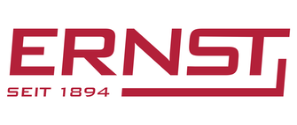
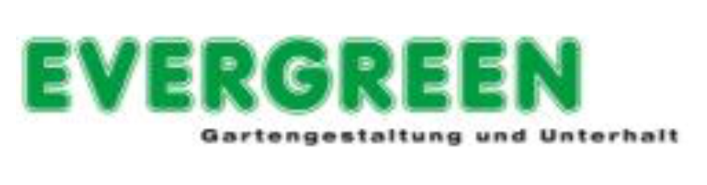
 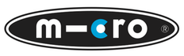
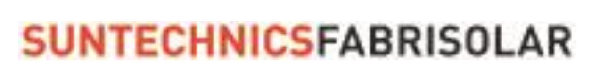
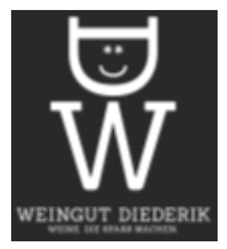
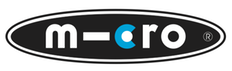
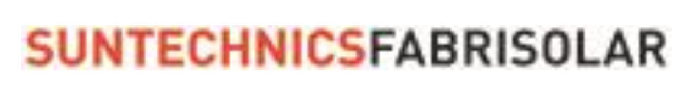
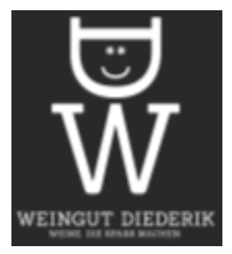

Bronzesponsoren
LEC Leutenberger Energie Control, Küsnacht
MODEKELLER, Küsnacht
Norbert Cajochen, Treuhand und Steuerrechtspraxis, Küsnacht
Silvia Spescha, DDS Data-Design Spescha, Untersiggental
Zuber Maler, Küsnacht
Zürcher Kantonalbank, Küsnacht
Gönner
 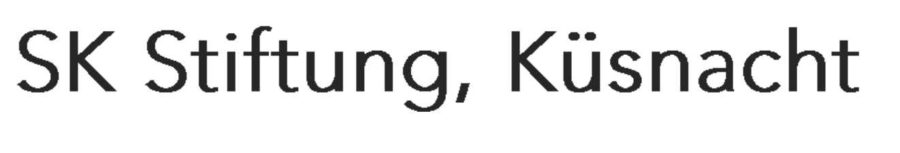
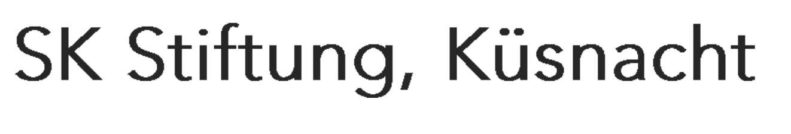